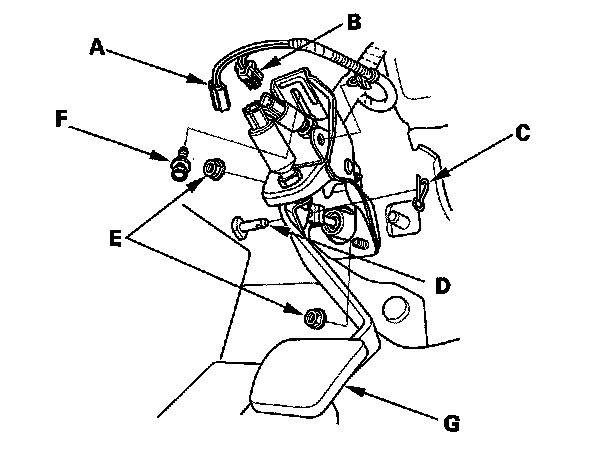
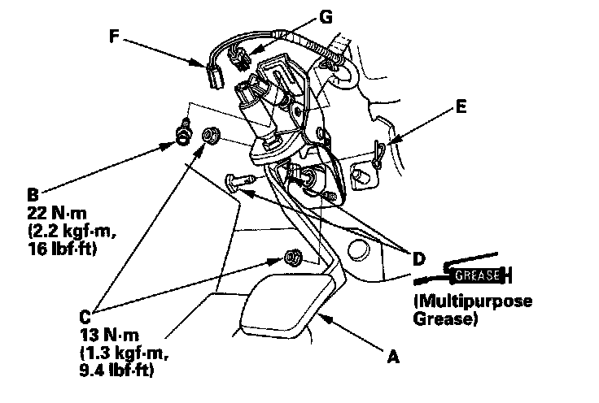

Clutch Pedal Assembly: Service and Repair
Clutch Pedal Replacement1. Disconnect the clutch pedal position switch connector (A) and clutch interlock switch connector (B).

2. Pry out the lock pin (C), and pull the pedal pin (D) out of the yoke.
3. Remove the master cylinder mounting nuts (E) and clutch pedal mounting bolt (F).
4. Remove the clutch pedal (G).
5. Install the clutch pedal (A).

6. Install the clutch pedal mounting bolt (B) and master cylinder mounting nuts (C).
7. Apply grease to the pedal pin (D), and slide it into the yoke, then install a new lock pin (E).
8. Connect the clutch pedal position switch connector (F) and clutch interlock switch connector (G).
9. Adjust the clutch pedal, clutch pedal position switch, and clutch interlock switch.
10. Check the clutch operation.